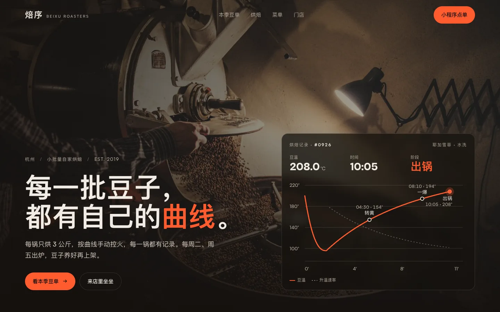

焙序咖啡

一家自家烘焙咖啡馆的官网，首屏是一条实时画出来的烘焙曲线，豆单做成了豆包标签。
客户是一家做精品咖啡豆烘焙的小店，之前只有朋友圈和小红书在卖，想做一个正式的品牌网站。
网站的核心创意是把"烘焙"这个过程可视化。首屏用 SVG + requestAnimationFrame 实时画出一条烘焙温度曲线，随着滚动，曲线从生豆状态一路升到一爆、二爆，最后落到成品豆的颜色。
豆单页面没有用传统的表格，而是把每款豆子做成了真实的豆包标签样式——有产地、海拔、处理法，还有风味轮盘。鼠标悬停时标签会微微翘起，像真的从货架上拿起来一样。
整站用纯 HTML/CSS/JS 实现，没有框架，加载很快。手机端也做了完整适配，在小屏幕上烘焙曲线会变成纵向滚动。
下一个作品
仓衡 WMS →